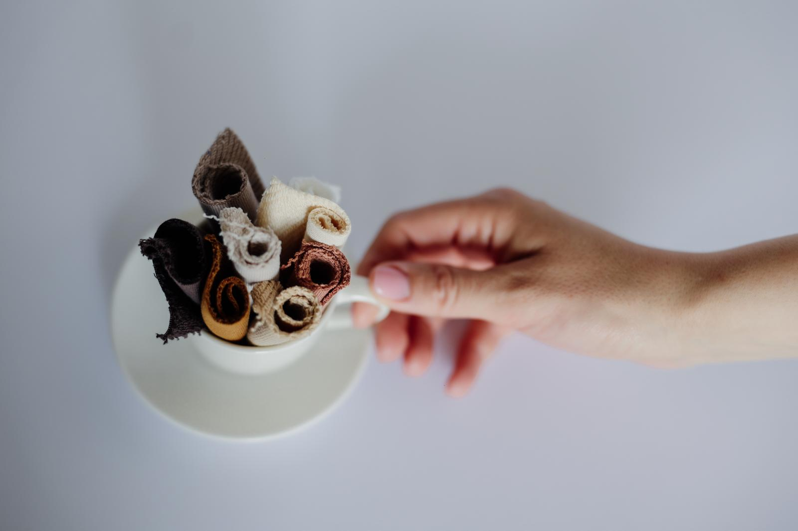
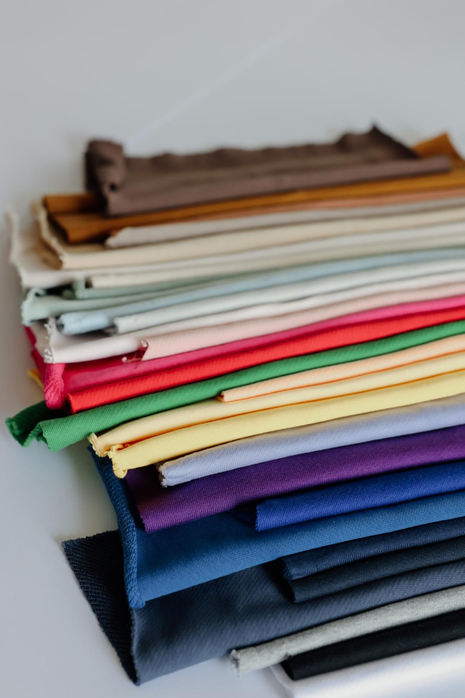
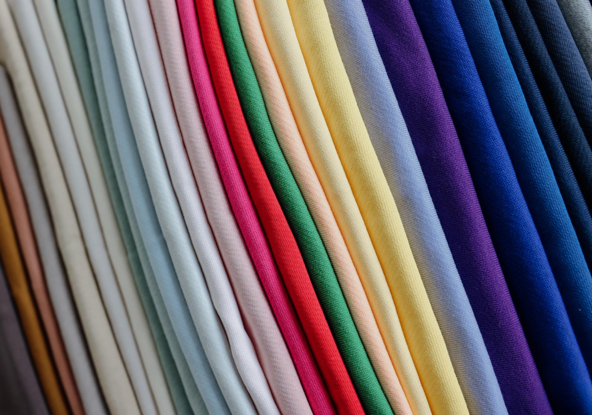
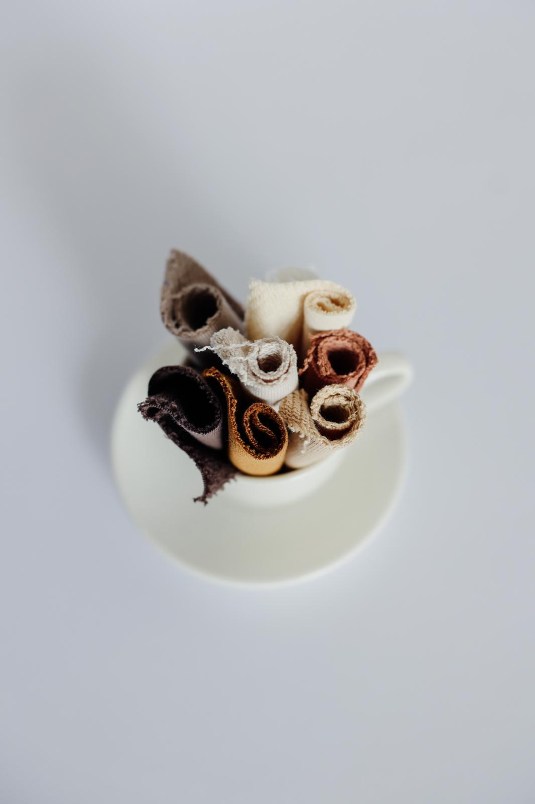
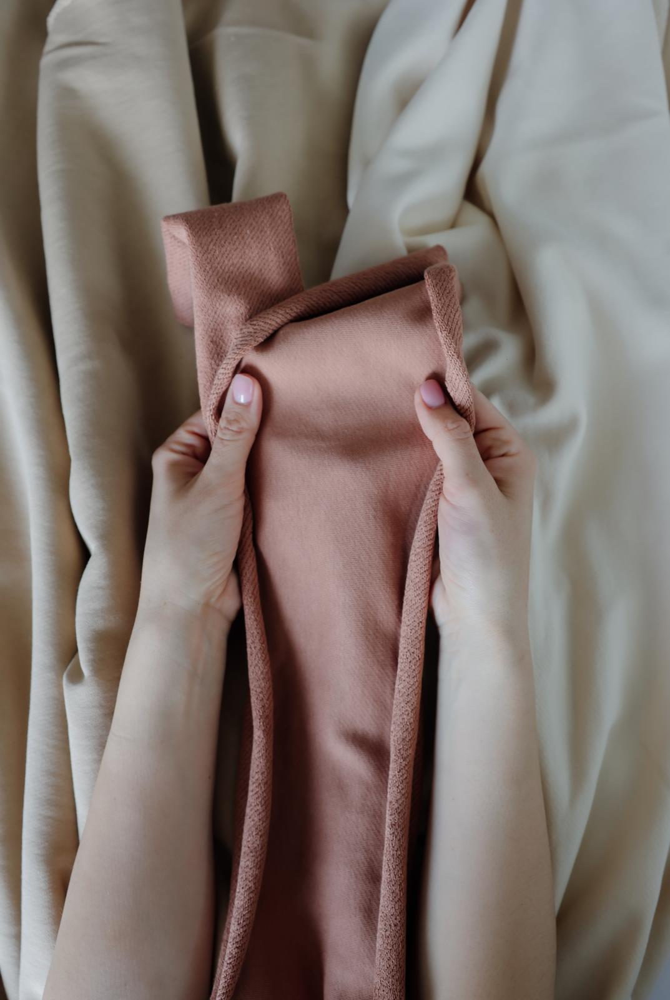
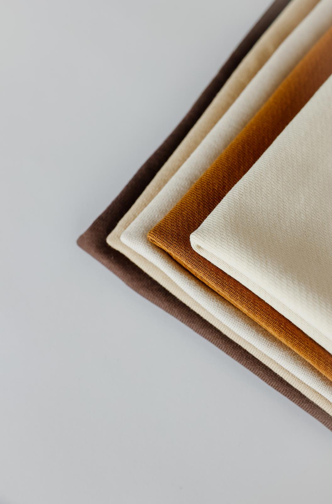
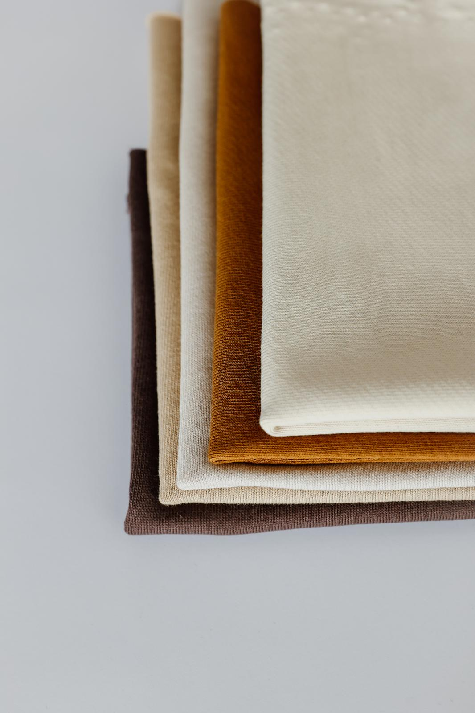
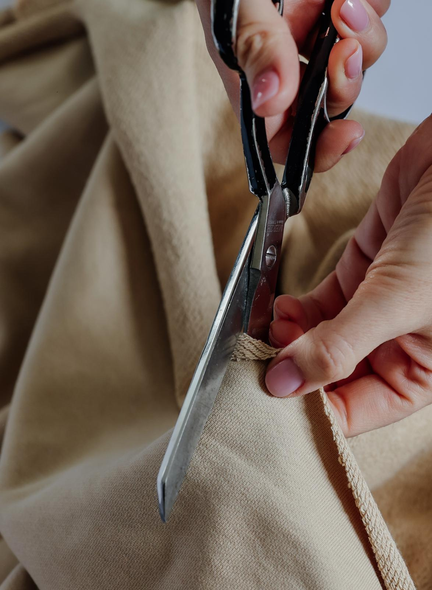
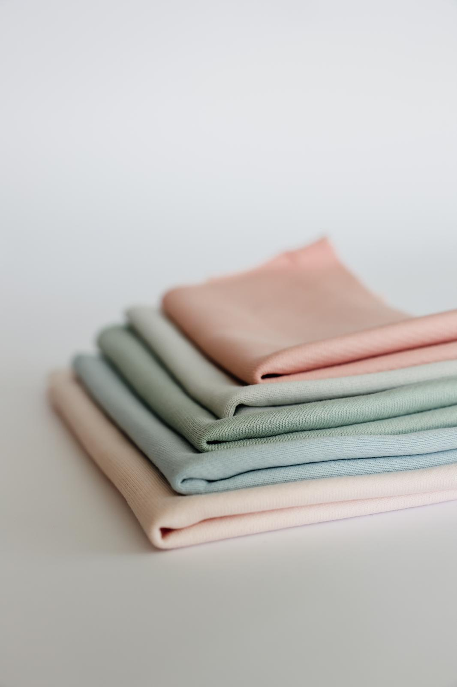

Deo naše kolekcije da Vam zagolicamo maštu
Premijum materijali za izvanredne kreacije.
Pogledajte najčešća pitanja o materijalima i veleprodaji.
O našim materijalima
U ponudi firme Velvet Fabrics nalazi se pažljivo odabran asortiman pamučnih tkanina namenjenih proizvodnji odeće.
Fokusirani smo na:
- 100% pamuk različitih gramatura
- premium pamuk materijale (modal, pamuk sa likrom i slične kombinacije)
- tkanine za konfekciju i modne kolekcije
- materijale pogodne za serijsku proizvodnju
Posebno izdvajamo:
- pamuk veće gramature (npr. 240g)
- materijale prijatne za nošenje i dugotrajne u upotrebi
- pouzdanu robu sa ujednačenim kvalitetom
Ako niste sigurni koji materijal vam je potreban, možete doći kod nas u Novi Sad i pogledati ponudu uživo – ili se konsultovati sa nama za konkretan predlog.


Merino Wool Blend
Luxuriously soft wool blend in sage green. Perfect for autumn coats.

Raw Silk Organza
Hand-woven silk with natural sheen. Ideal for evening wear.

Belgian Linen Canvas
Heavyweight linen in natural beige. Breathable and durable.

Cashmere Knit
Pure cashmere in warm walnut tone. Unparalleled softness.

Tencel Modal Blend
Sustainable fabric with silk-like drape. Eco-friendly choice.

Italian Wool Suiting
Premium suiting wool from Milan. Classic charcoal gray.

Organic Cotton Twill
GOTS certified organic cotton. Versatile and comfortable.

Hemp Silk Blend
Innovative blend combining hemp's durability with silk's elegance.
Najčešća pitanja o materijalima i veleprodaji (FAQ)
Da li radite samo pamuk ili imate i druge materijale?
Fokusirani smo isključivo na pamuk i premium varijacije pamučnih materijala. Ne bavimo se sintetikom.
Odakle dolazi vaša roba?
Sva roba je iz Turske, od proizvođača sa kojima imamo dugogodišnju saradnju.
Da li mogu da pogledam tkanine uživo?
Da, nalazimo se u Novom Sadu i moguće je doći i pogledati materijale direktno u našem prostoru.
Da li prodajete manje količine?
Primarno radimo veleprodaju, ali u zavisnosti od materijala i dostupnosti postoji mogućnost dogovora.
Da li imate materijale veće gramature?
Da, u ponudi imamo i pamuk veće gramature, uključujući i 240g, koji je pogodan za kvalitetnije komade odeće.
Da li imate stalnu ponudu ili se menja?
Imamo osnovne artikle koji su stalno dostupni, ali deo ponude se redovno menja u skladu sa nabavkom i potražnjom.
Kako da znam koji materijal mi odgovara?
Možete se konsultovati sa nama – na osnovu vaše potrebe predložićemo odgovarajuće opcije.
Za sve ostalo, najbolje da nas posetite i uverite se sami!
Uvozimo najfinije materijale koji čekaju da ih skrojite
Posetite nas